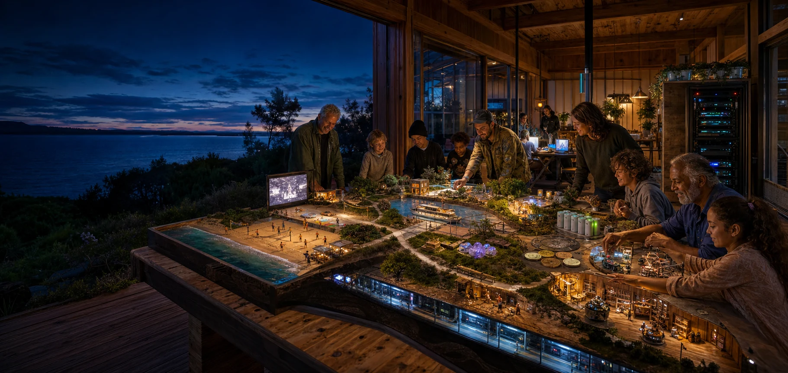

P01 · Supplied project
UNGA81: A fair go in the age of intelligence ↗
Public-purpose and missing-middle framework
Project connections · Luke Nathan Hayes
Thirteen supporting project connections and the presentation repository.

Every project supplied directly in this conversation, with its role in the proposal. Links connect distinct projects; they do not merge their organisations or permissions.
P01 · Supplied project
Public-purpose and missing-middle framework
P02 · Supplied project
A local rack, workloads, shared equipment and learning
P03 · Supplied project
Participation, relationships and shared assets
P04 · Supplied project
Women-led enterprise, leadership and investment development
P05 · Supplied project
Business succession, ownership, learning and time
P06 · Supplied project
Personal and project-specific legal relevance
P07 · Supplied project
Source-linked legal intelligence development
P08 · Supplied project
Project context and legal research preparation
P09 · Supplied project
Voluntary contribution and non-monetary reciprocity
P10 · Supplied project
Civic development, councils, divisions and electorate twins
P11 · Supplied project
Genesis, Geode development and teacher learning
P12 · Supplied project
Locally shaped wellbeing co-operatives
P13 · Supplied project
Aged care, longevity and community assets
P14 · Supplied project
This presentation, source register and shared development briefs